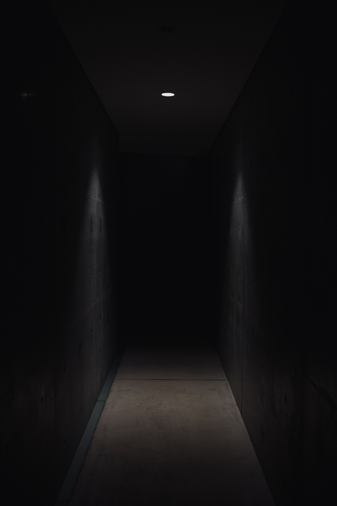

"i wish"
br promised you the world just to get in your pants.
i promissed you the world
and instead gave you my heart.
He told you that he loved you
but it didn't feel the same.
i think how much i love you
and i just feel pain.
you are with him because of how you feel
knowing he doesn't feel the same. everytime i go to sleep in the middle of the night i wake calling out your name. danm how i wish you felt thesame.
"ye payer"
if i were on the highest cliff,
on the highest rift
and you slipped off the side
and clenched on to your life
in my grip.
i will never,
ever!
let you
down!
see i too dream in color and in rhyme.
so i guess i am one of a kind
in a full house.
cuz whenever I open my heart
my soul
or my mouth!
a touch of god rains out.
untitled
the stance is deceiving
the style is unrefined.
the world goes round and round
like it's on repeat,
one song.
yet every day it's a different play.
a new chapter to that book you started
but,
still can't get around to read.
so many styles that make
that story called,
life...
never boring.
we look at animals,we judge,
we kill, act and
react.we
stuff, mount,
use for sport or to parade around town.
yet we try to be sophisticated, of course
there are those...
told me to forget her
she said i should forget her,
that sad and lonely night.
she told me to forget her,
gave me her goodbye.
she said i should forget her
and I gave that thought a try,
my surprise as the years went by,
i got along just fine.
i told! myself
i would forget her
thought to myself
i'll forget her.
till today when she passed me by...
I think I'll hang my tears out
to dry
"state of mind"
being young is a state of mind
being young is a state of mind.
old is a state of mind. one you choose
to accept at any age.
this!, is simply my vessel.
(question mark look on face)
vessel,
yeah.
i've grown,
learned, hmph
i've bled in this.
yeah things have chnaged. this vessel goes through
changes.
we all grow.
mentaly, physically, spiritually.
yet throughout this some times long,
some times shorter adventure called life
few ever learn that the only difference between youth and
elderly isn't just age
but a state of mind.
being young is a state of mind.
"summer rain dance"
in the summer rain,
as the clouds pass.
the rain drops fall.
all in a race to get to the floor
i see them dancing in a race.
falling from what at times seems
like space.
and dance along the sidewalk floor.
they dance
"light without darkness"
what is light, without darkness?
for without darkness we would know no light.
with light we create hope.
hope that gets clouded,
clouded, when the light fades
and gives rise to the darkness.
But...the darkness isn't all bad.
"out of the night that covers me,
black as the pit,
from pole to pole.
I thank whatever gods may be
for my
unconquerable soul.
in the fell clutch of circumstance
I have not whined, nor cried allowed.
under the blegering of chance,
my head is bloody but I am bowed."
it matters not how straight the gate,
how charged with punishment the scroll.
I am the master of my fate
I am the captain
of my
soul"